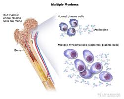

Multiple myeloma
atau myeloma adalah jenis kanker yang menyerang sel plasma pada tulang
sumsum penderita yaitu ketika pertumbuhan jumlah sel myeloma lebih banyak
dari jumlah sel darah sehat.
sehingga yang seharusnya tulang sumsum memproduksi protein penghasil
antibodi pencegah infeksi penyakit, karena sel kanker ini justru memproduksi
protein abnormal yang akhirnya merugikan

Sel kanker ini dapat menyerang dan menyebabkan gangguan pada bagian tubuh
lain seperti ginjal dan tulang
Gejala Multiple Myeloma
Gejala Multiple myeloma muncul seiring berkembangnya sel kanker, sehingga
sebagian penderita tidak merasakan apa pun di awal penyakit. Gejala yang dialami
termasuk gejala-gejala umum dan bervariasi, yaitu :
Kehilangan selera makan
konstipasi
merasa mual
Sakit tulang, terutama di dada atau tulang belakang
kelelahan
penurunan berat badan
sering merasa haus
mudah terserang infeksi
kebingungan atau penurunan mental
mengalami mati rasa pada kaki
temui dokter jika Anda mengalami gejala-gejala diatas untuk memperoleh
diagnosis yang tepat
Penyebab Multiple Myeloma
Multiple myeloma termasuk kasus yang tidak umum dan belum diketahui dengan
pasti penyebabnya. pertumbuhan sel myeloma normal akan menghasilkan antibodi normal
yang bermanfaat bagi tubuh. Pertumbuhan sel myeloma abnormal memberikan efek yang
sebaliknya. Sel abnormal dapat berlipat ganda dengan cepat, kemudian menghasilkan
antibodi yang merugikan tubuh. Kondisi ini berkaitan juga dengan kondisi lain yang
lebih ringan, yaitu MGUS (monoclonal gammopathy of undetermined significance).
MGUS adalah kondisi ketika antibodi abnormal atau protein monoklonal atau protein M,
diproduksi oleh sel myeloma, tetapi tidak menyebabkan kerusakan pada tubuh. Meski
demikian, sebagian besar kasus multiple myeloma berawal dari kondisi MGUS. Dari
seratus orang yang mengidap MGUS, satu orang di antaranya mengidap multiple myeloma
lolo